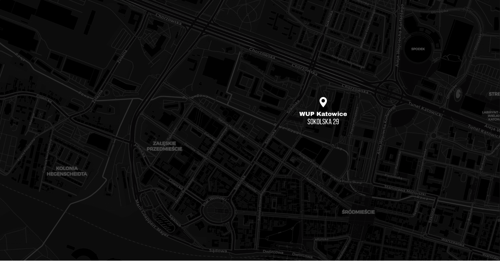

Skontaktuj się z nami
W sprawie organizacji szkolenia napisz lub zadzwoń do Wojewódzkiego Urzędu Pracy w Katowicach.
E-mailpr@wup-katowice.pl
Telefon32 757 33 84
Masz grupę, temat albo problem, nad którym chcesz pracować? Skontaktuj się z nami w sprawie dostępnych szkoleń, zajęć dla pracowników lub klientów oraz działań rozwijających kompetencje zawodowe.

W sprawie organizacji szkolenia napisz lub zadzwoń do Wojewódzkiego Urzędu Pracy w Katowicach.
Powiatowe urzędy pracy i inne instytucje mogą zgłosić potrzebę szkolenia dla pracowników lub klientów mailowo albo telefonicznie.
W wiadomości podaj temat, grupę odbiorców, orientacyjną liczbę uczestników i preferowany okres realizacji. Te informacje pozwolą nam szybciej sprawdzić możliwości.
Możesz zapytać o bieżący nabór albo omówić potrzeby szkoleniowe swojej instytucji.
Informacja o uruchomionych naborach i planowanych terminach szkoleń.
Rozmowa o tym, który program najlepiej odpowiada potrzebom pracowników lub klientów.
Ustalenie grupy odbiorców, zakresu, formy i możliwego terminu realizacji.
Sprawdź dostępne nabory, wybierz temat i skontaktuj się z nami.